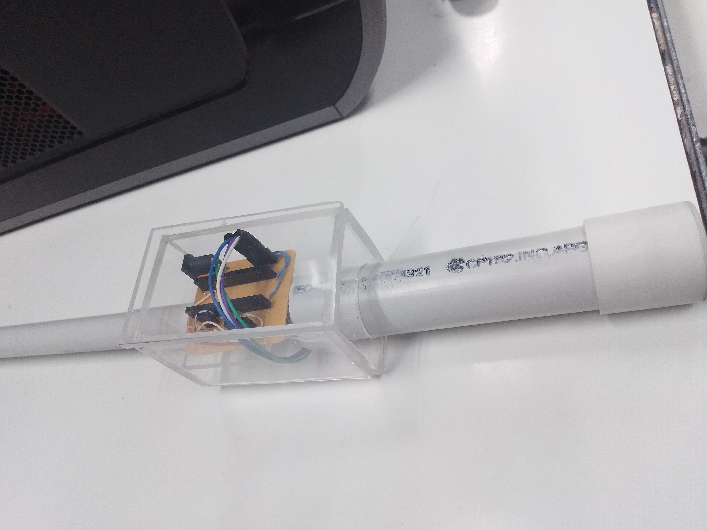
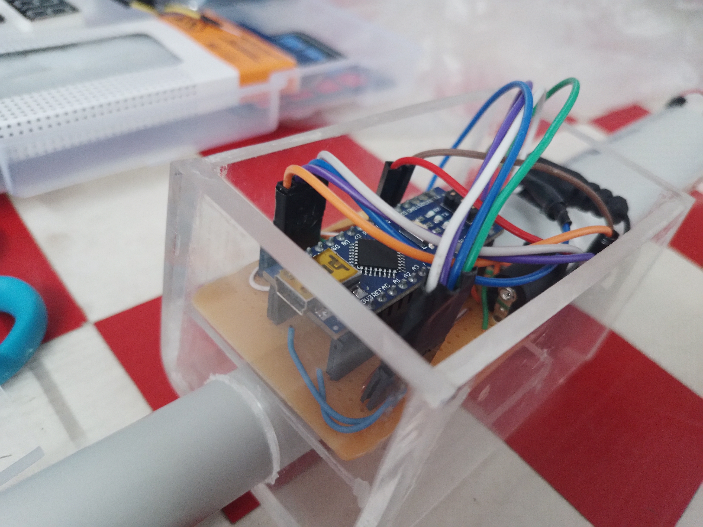
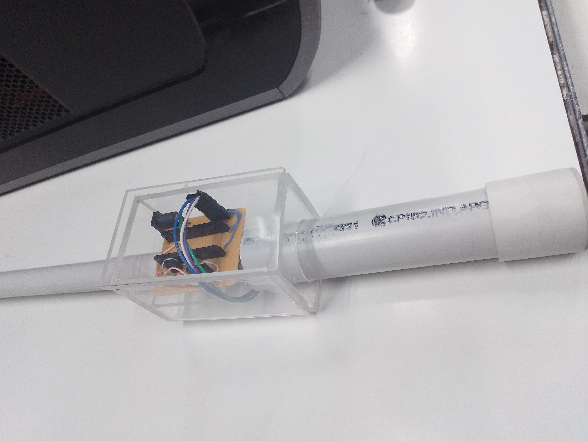
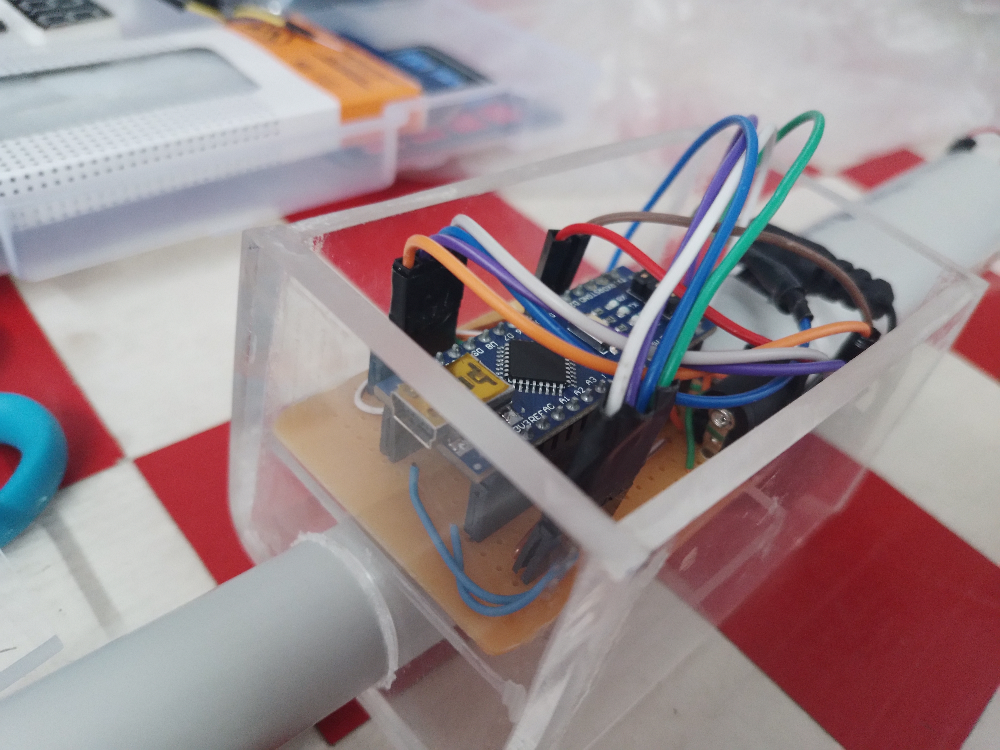

¿Que te ofrecemos?
SEGURIDAD
Ya que nuestro BASTÓN utiliza sensores, no tendrás problemas a la hora de salir a la calle.
ECONÓMICO
Nuestro producto entiende tus necesidades y por eso tenemos el precio mas accesible dentro del mercado.
CONFIANZA
Nos encargaremos del mantenimiento del bastón sin coste, para asegurarnos que nunca tengas algún problema.
SEGURIDAD
Gracias a los sensores integrados en STEPS V N°1, cada obstáculo en tu camino, ya sea a tus pies o por encima de tus hombros, será detectado y te llegará un aviso mediante vibración directamente a tu mano.

MATERIALES
Los materiales que fueron utilizados para STEPS V N°1 fueron un tubo de pbc para el tubo y filamento de plastico para el mango.


 


